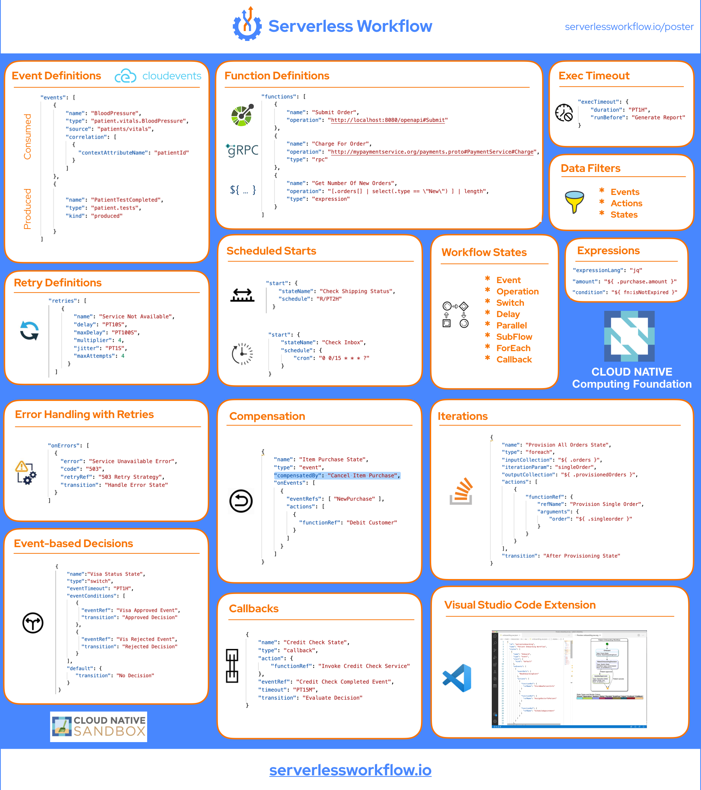

Github
Twitter
Home
Specification
Examples
Use Cases
SDKs
Go
Java
Serverless Workflow Poster
Serverless Workflow poster provides an overview of the various elements and features of the workflow language.
With short JSON examples, the correct use of Serverless Workflow language can be seen at a glance
